class: center, middle # Cloud study group - AWS Lambda --- # Agenda - Plagure-slides-ing - Demo - cloud cron --- <a href="https://www.slideshare.net/AmazonWebServices/deep-dive-on-aws-lambda">(source)</a> 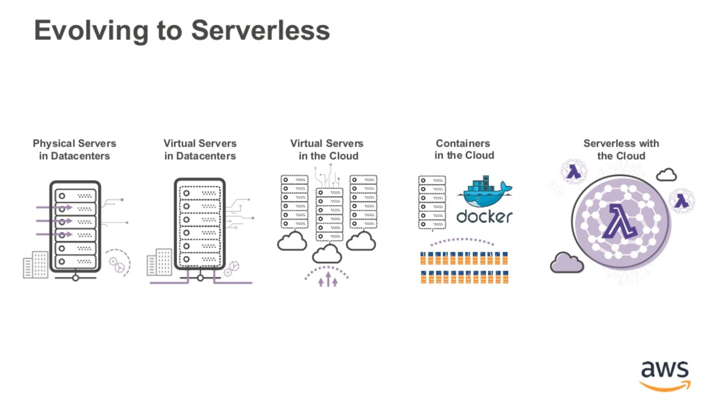 --- <a href="https://www.slideshare.net/AmazonWebServices/deep-dive-on-aws-lambda">(source)</a> 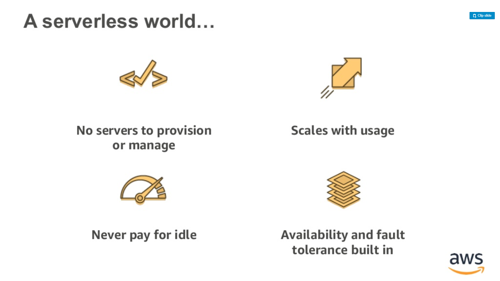 --- <a href="https://www.slideshare.net/AmazonWebServices/deep-dive-on-aws-lambda">(source)</a> 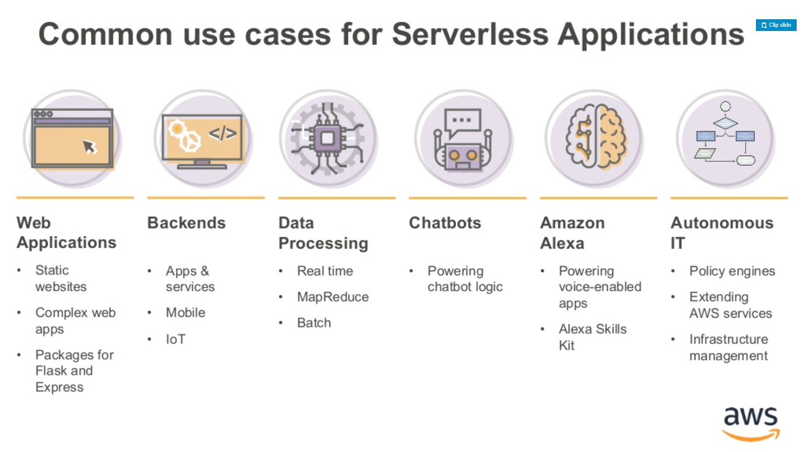 --- <a href="https://www.slideshare.net/AmazonWebServices/deep-dive-on-aws-lambda">(source)</a> 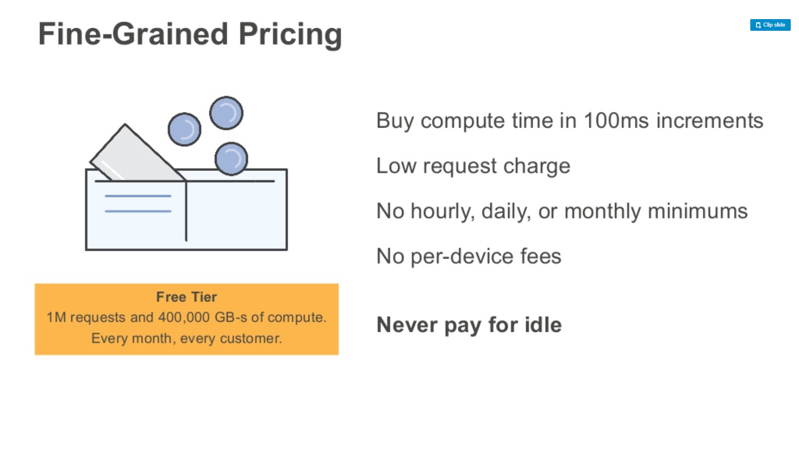 --- <a href="https://www.slideshare.net/AmazonWebServices/deep-dive-on-aws-lambda">(source)</a> 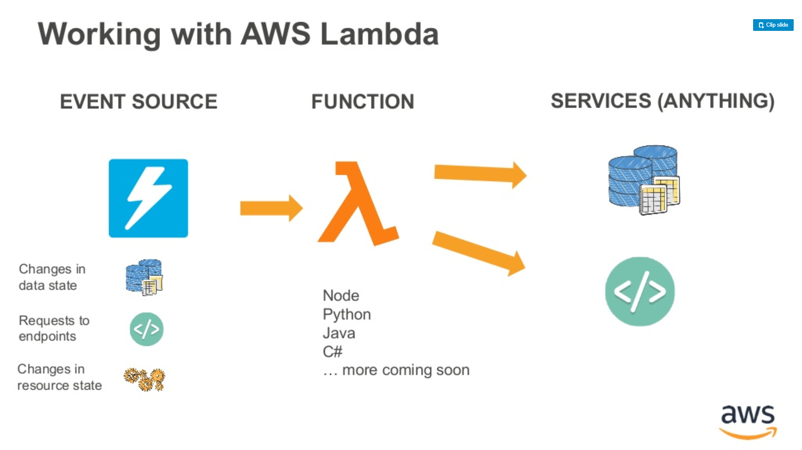 --- <a href="https://www.slideshare.net/AmazonWebServices/deep-dive-on-aws-lambda">(source)</a> 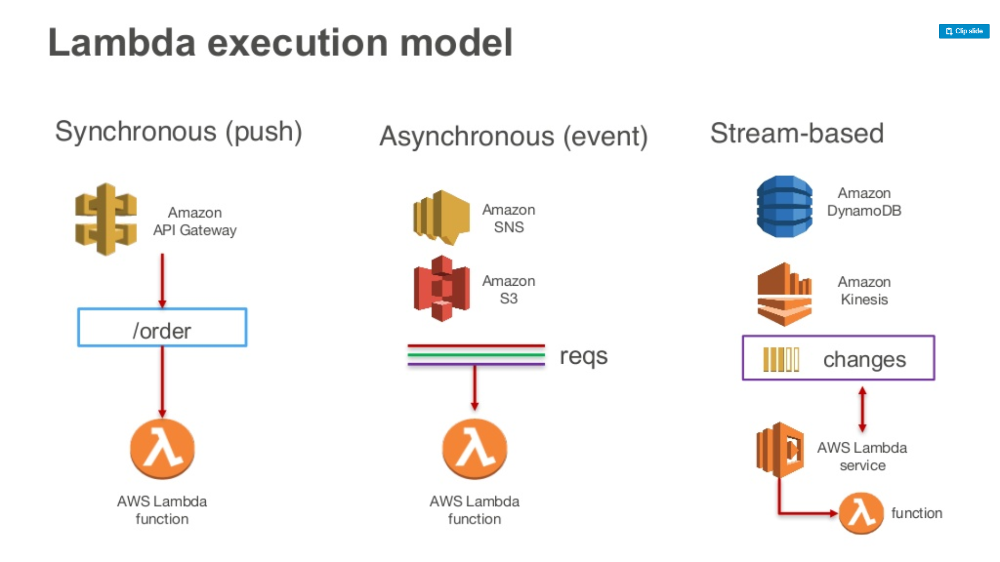 --- <a href="https://www.slideshare.net/AmazonWebServices/deep-dive-on-aws-lambda">(source)</a> 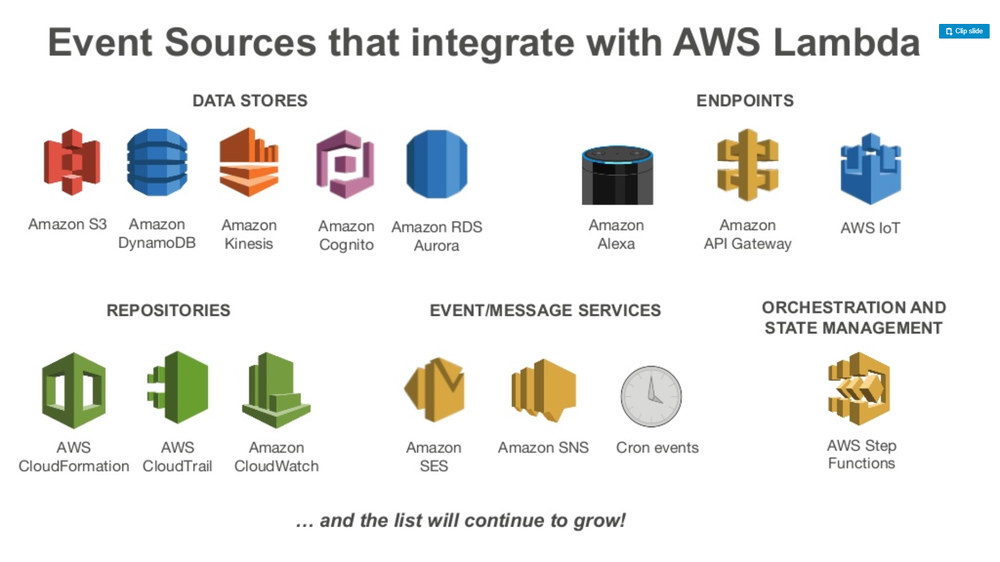 --- <a href="https://www.slideshare.net/AmazonWebServices/deep-dive-on-aws-lambda">(source)</a> 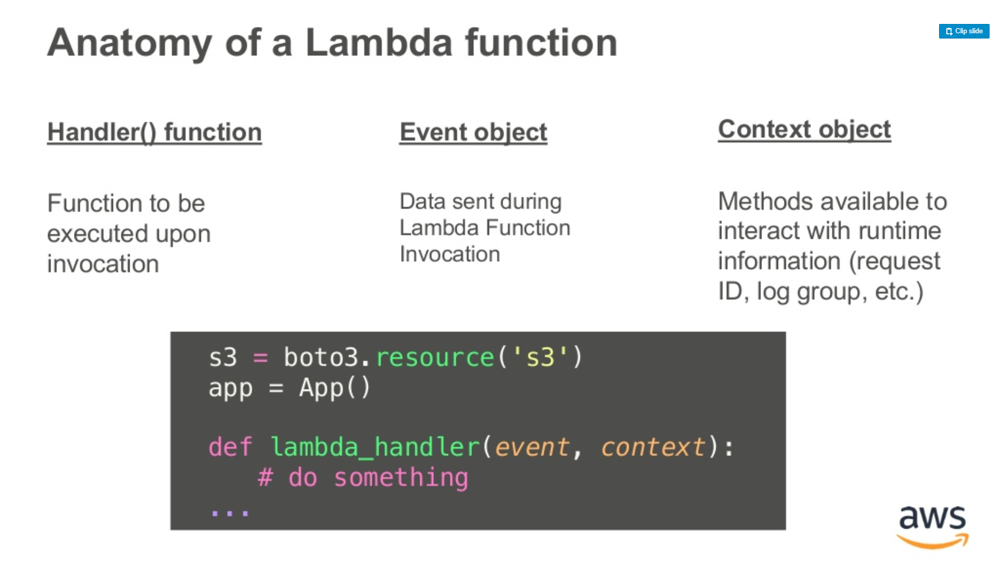 --- <a href="https://www.slideshare.net/AmazonWebServices/deep-dive-on-aws-lambda">(source)</a> 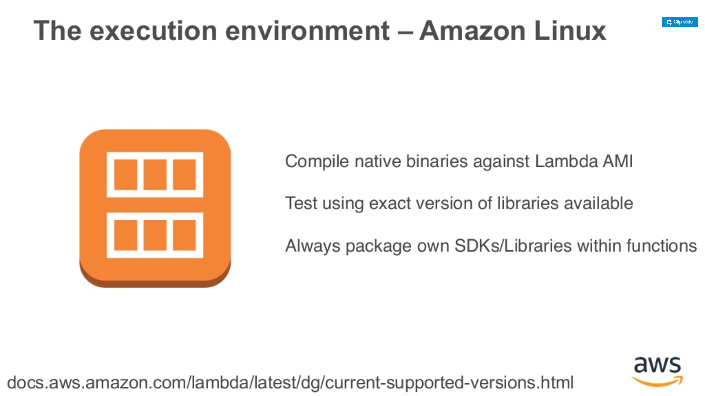 --- <a href="https://www.slideshare.net/AmazonWebServices/deep-dive-on-aws-lambda">(source)</a> 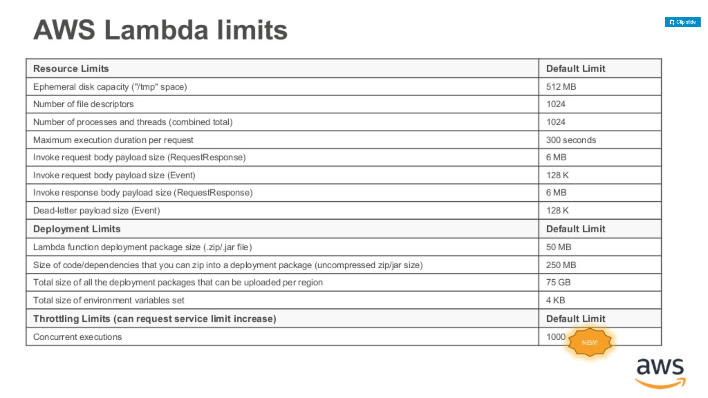 --- <a href="https://www.slideshare.net/AmazonWebServices/deep-dive-on-aws-lambda">(source)</a> 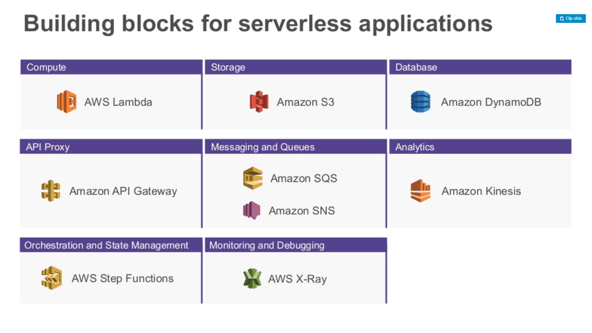 --- <a href="https://www.slideshare.net/AmazonWebServices/intro-to-aws-lambda-london-loft">(source)</a> 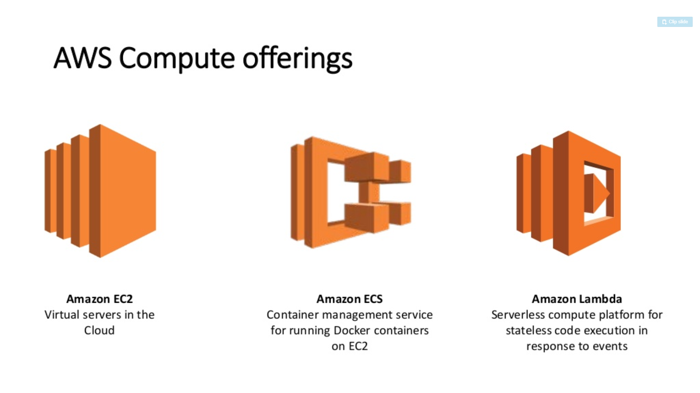 --- https://www.slideshare.net/scottleber/aws-lambda-73153540 --- ### Demo Event -> Lambda -> S3 Setup a cloud 'cron' job to write to s3 every 30 seconds <a href="http://jeremievallee.com/2017/03/26/aws-lambda-terraform/">inspired by</a> Need - S3 bucket (for deploying lambda) - Event - Lambda - S3 bucket (to write to) - Permissions for above (invocation and access) --- ### The end Any questions?